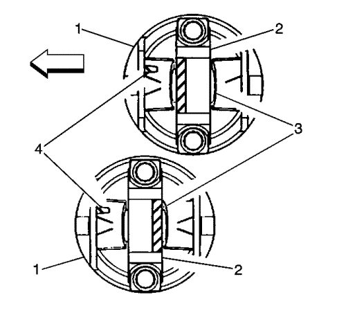
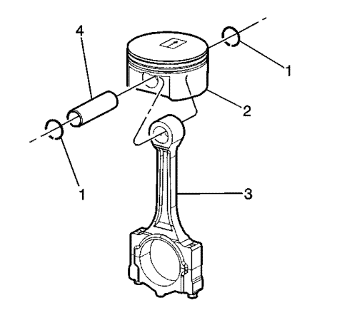
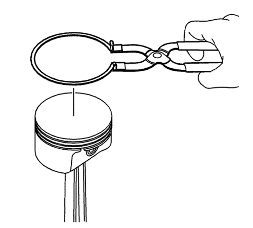
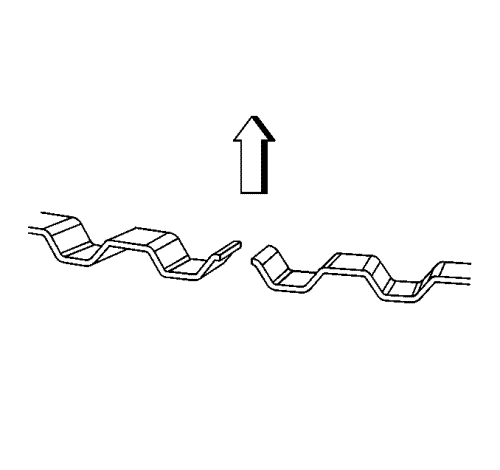
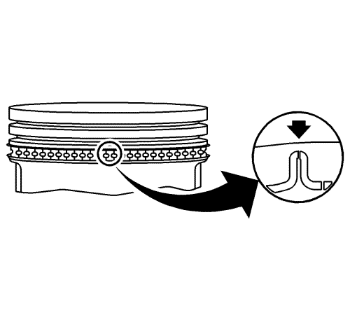
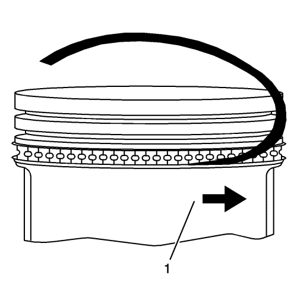
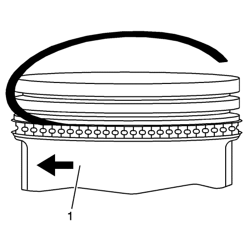
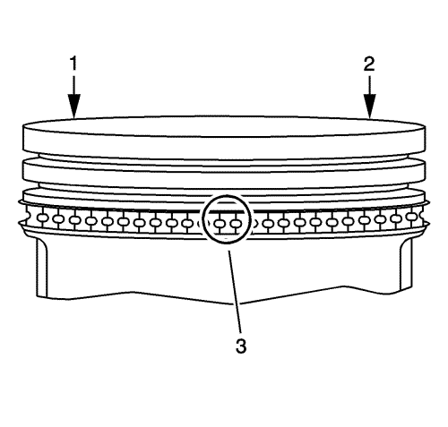
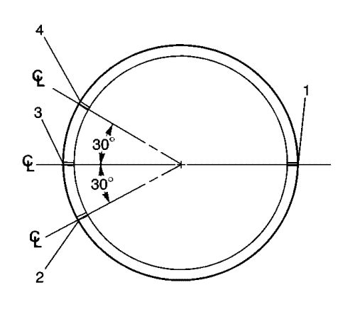
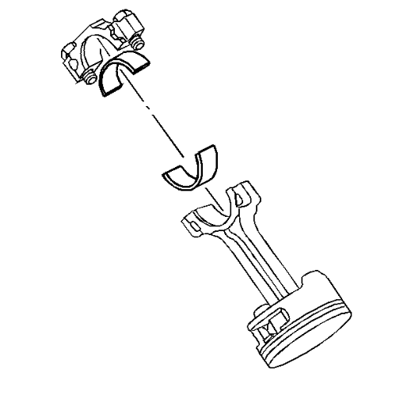

Ensamblado del pistón y la biela
Herramientas especiales
EN-46745 Herramienta de desmontaje y montaje de clips de bulón de pistón
Si desea informarse sobre herramientas regionales equivalentes, consultar Herramientas especiales .
Procedimiento de montaje del pistón y el vástago del pistón

- Oriente adecuadamente el pistón (1) sobre la biela (2) como se indica:
| • | La marca de localización (4) acuñada en el lado inferior del pistón debería apuntar hacia la parte delantera del motor. |
| • | La muesca de ubicación (3) del sombrerete de la biela debería apuntar hacia la parte trasera con los cilindros de números impares y hacia la parte delantera del motor con los cilindros de números pares. |
- Lubrique los orificios del bulón del pistón en el pistón y la biela. Consulte Adhesivos, líquidos, lubricantes y selladores para el lubricante recomendado.

- Alinee el orificio de pasador del pistón con el orificio de pasador de la varilla de unión.
- Deslice el bulón del pistón (4) en el pistón y la varilla de unión (3).
Nota: Deben utilizarse elementos de sujeción de pasador de pistón nuevos. Nunca reutilice los elementos de sujeción del pasador de pistón.
- Coloque los elementos de sujeción del bulón del pistón (1) NUEVOS usando la herramienta de desmontaje y montaje EN-46745.
- Asegúrese de que los elementos de retención de pasador de pistón están totalmente asentados en sus ranuras.
- Repita estos pasos para el resto de pistones.
Procedimiento de montaje de segmento de pistón

Atención: Utilice un expansor para montar los segmentos de pistón. Los segmentos pueden dañarse si se expanden más de lo necesario.
- Coloque los segmentos de pistón con una herramienta de montaje de segmentos de pistón.

- Antes del montaje, oriente adecuadamente el expansor del segmento de control de aceite tal como se muestra. Los extremos del expansor deben estar dirigidos hacia la parte superior del pistón.

- Coloque el distanciador del segmento de pistón de control de aceite en la posición correcta.

- Coloque el segmento de pistón de control de aceite inferior en el pistón (1).

- Coloque el segmento de pistón de control de aceite superior en el pistón (1).

- Separe los huecos del extremo del segmento de pistón de control de aceite (1, 2) con un mínimo de 90 grados de separación.

- Coloque el segmento de pistón de compresión inferior en el pistón (1).
La marca lateral del segmento de pistón debe mirar hacia la parte superior del pistón.
- Coloque el segmento de pistón de compresión superior en el pistón.
El segmento de compresión superior podrá instalarse tanto boca arriba como boca abajo.

- Una vez montados los segmentos, ajuste los huecos entre los segmentos superior, segundo y de control del aceite en las posiciones indicadas:
| 9.1. | Posición 1 de huecos de segundo segmento de compresión y expansor del segmento de control de aceite. |
| 9.2. | Posición 2 de hueco de segmento de control de aceite superior. |
| 9.3. | Posición 3 de hueco de segmento de compresión superior. |
| 9.4. | Posición 4 de hueco de segmento de control de aceite inferior. |
Procedimiento de montaje de cojinete de varilla de unión
Nota: Si los cojinetes de varilla de unión se han utilizado en un motor en funcionamiento, debe sustituirlos por NUEVOS cojinetes de varilla de unión para el nuevo montaje.
- Limpie la varilla de unión y el orificio de cojinete de caperuza de varilla de unión con un trapo sin pelusas.

- Limpie todo el aceite que haya detrás de los semicojinetes de varilla de unión.
- Monte nuevos cojinetes de varilla de unión superiores en el lugar adecuado. Ruede el cojinete a su posición de modo que la lengüeta de bloqueo se acople en la ranura de alineación. El cojinete de quedar alineado con la varilla de unión.
- Monte nuevos cojinetes de varilla de unión inferior en su posición en la caperuza de varilla de unión. Ruede el cojinete a su posición de modo que la lengüeta de bloqueo se acople en la ranura de alineación. Los cojinetes deben quedar alineados con la caperuza de la varilla de unión.
| © Copyright Chevrolet Europe. All rights reserved |